Lab 2: IMU
Goal: add the IMU to the robot, power Artemis and sensors from battery, and record a stunt.
Prelab
Read the IMU overview (SparkFun ICM-20948 guide) and skimmed the lab instructions to understand wiring, address selection, and register access flow.
Setting up the IMU
- Installed SparkFun 9DOF IMU Breakout - ICM-20948 Arduino library via Library Manager.
- Connected the IMU to the Artemis board with QWIIC cables.
- Ran examples/Arduino/Example1_Basics from the library to confirm comms.
X Vector Upwards
We can see when the x direction faces straight up, the acceleration is close to 9.8, or gravity
We observe the same for when Y and Z face upwards.
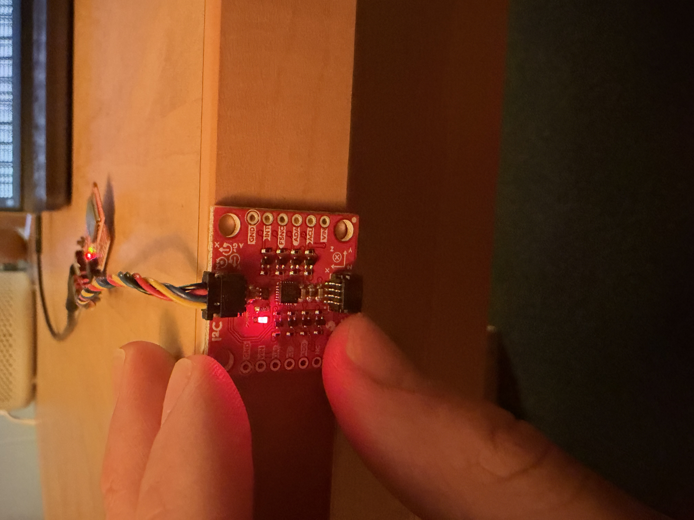
Y Vector Upwards
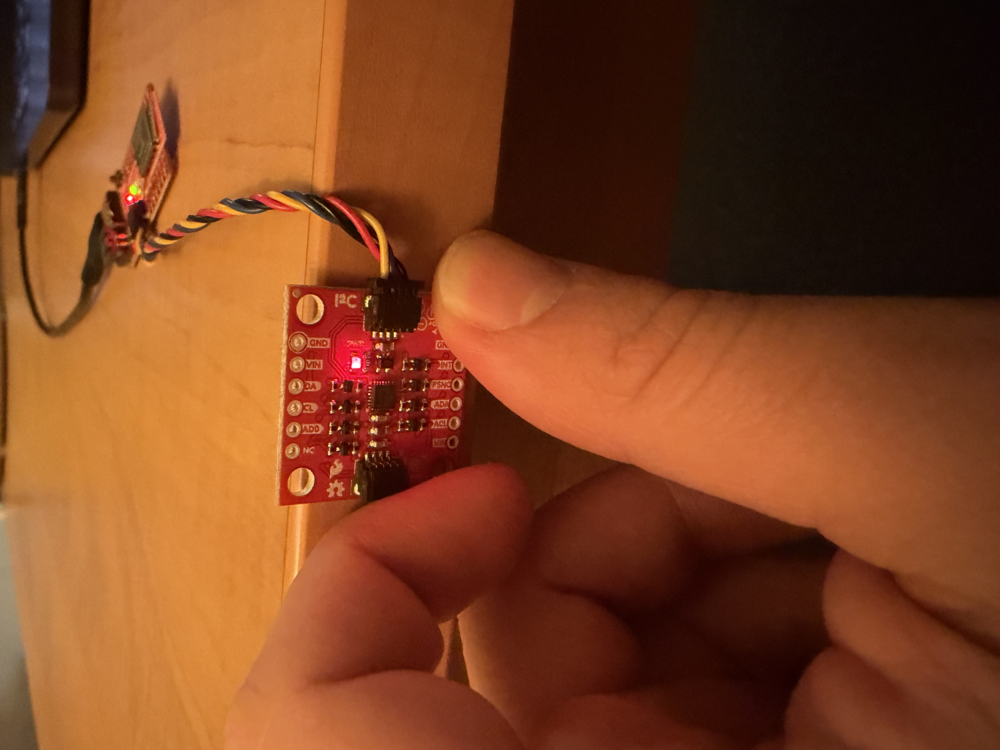
Z Vector Upwards
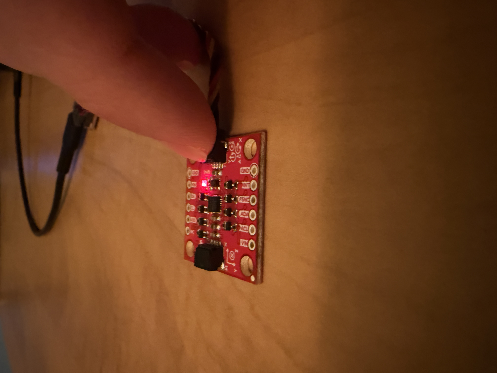
Overall, the accelerometer and gyroscope were providing good readings, when the IMU was still, the gyroscope measurements read ~0, which is expected.
Board Power Indicator
To indicate that the board is on, I added the code below to the setup() function in ble_arduino.ino
// indicate board on with 3 blinks
pinMode(LED_BUILTIN, OUTPUT);
for (int i = 0; i < 3; i++) {
digitalWrite(LED_BUILTIN, HIGH);
delay(250);
digitalWrite(LED_BUILTIN, LOW);
delay(250);
}Accelerometer
Now that I have verified that I can get IMU readings, I want to convert accelerometer data into pitch and roll. I copied over the defined variables from the example code into ble_arduino.ino. Next, I added a new function called IMU_LOOP, which continues collecting pitch and roll data and visualizes it with the serial plotter. I made sure to use the functions, myICM.dataReady() and myICM.getAGMT(), from the example code.
After I implemented pitch and roll with the following equations:
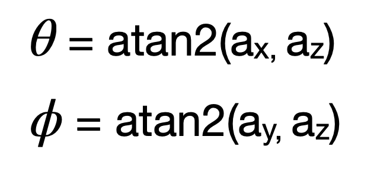
I was able to cleanly visualize both:
case IMU_LOOP: {
float pitch;
float roll;
while (true) {
while (!myICM.dataReady()) {}
myICM.getAGMT();
roll = atan2(myICM.accX(), myICM.accZ()) * 180 / M_PI;
pitch = atan2(myICM.accY(), myICM.accZ()) * 180 / M_PI;
Serial.print(-150); Serial.print(" ");
Serial.print(150); Serial.print(" ");
Serial.print(roll); Serial.print(" ");
Serial.println(pitch);
}
}
break;Accelerometer Checks
Pitch = -90°
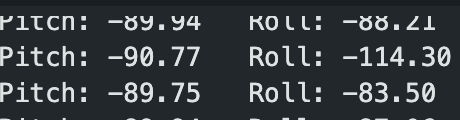
Pitch = +90°
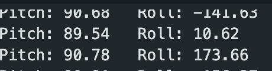
Roll = -90°
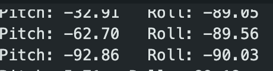
Roll = +90°
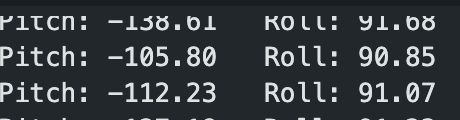
{-90, 0, 90} Pitch and Roll
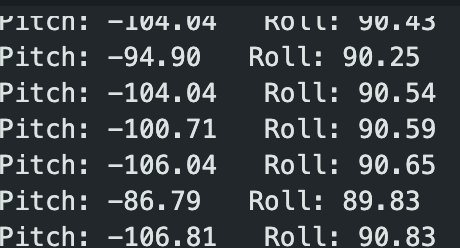
As we can see in the readings above, the accelerometer is very accurate, staying within one degree of desired measurement. Therefore, I did not need to calculate a conversion factor for calibration.
FFT + Noise
Next, I wanted to record data and analyze noise in the frequency spectrum using FFT. First, I wrote a new function, GET_ACCEL_DATA, that sends time, roll, and pitch data over BLE so I can work with it in Python. On the Jupyter Notebook (python), I save the data into a CSV file, which I then can analyze.
In the arduino code, I saved time, roll, and pitch data in separate arrays, each of the same size. For this case, I used an array of size 100.
int accel_arr_size = 300;
float millis_arr[300];
float roll_arr[300];
float pitch_arr[300];case GET_ACCEL_DATA: {
float pitch;
float roll;
// gather roll, pitch data into array
for (int i = 0; i < accel_arr_size; i++) {
//wait for ICM data
while (!myICM.dataReady()) {}
// once ready, fetch
myICM.getAGMT();
roll = atan2(myICM.accX(), myICM.accZ()) * 180 / M_PI;
pitch = atan2(myICM.accY(), myICM.accZ()) * 180 / M_PI;
millis_arr[i] = millis();
roll_arr[i] = roll;
pitch_arr[i] = pitch;
}
// send time, roll, pitch data over ble
for (int j = 0; j < accel_arr_size; j++) {
tx_estring_value.clear();
tx_estring_value.append("Time:");
tx_estring_value.append(millis_arr[j]);
tx_estring_value.append(",Roll:");
tx_estring_value.append(roll_arr[j]);
tx_characteristic_string.writeValue(tx_estring_value.c_str());
tx_estring_value.append(",Pitch:");
tx_estring_value.append(pitch_arr[j]);
tx_characteristic_string.writeValue(tx_estring_value.c_str());
}
}
break;def notification_handler(sender_uuid, data):
datapoint = data.decode("utf-8").strip()
time, roll, pitch = datapoint.split(",")
time = time[5:]
roll = roll[5:]
pitch = pitch[6:]
with open("imu_data.csv", "a+") as f:
f.seek(0)
if f.read(1) == "":
f.write("Time,Pitch,Roll\n")
f.write(f"{time},{pitch},{roll}\n")
ble.start_notify(ble.uuid['RX_STRING'], notification_handler)
ble.send_command(CMD.GET_ACCEL_DATA, "")FFT Analysis
Next, I used a Fast Fourier Transform to analyze the frequency spectrum of pitch and roll data when the car was running near the IMU to introduce noise. It's important to analyze the frequency spectrum, because certain outer sources, like the car, can introduce noise to the system, which messes with our readings. When implementing the low-pass filter, we want to know where our frequency cutoff is.
import numpy as np
import matplotlib.pyplot as plt
from scipy.fft import fft, fftfreq
datapoints = np.loadtxt('imu_data_loud.csv', delimiter=',', skiprows=1)
time_data = datapoints[:, 0] / 1000
pitch_data = datapoints[:, 1]
roll_data = datapoints[:, 2]
N = len(pitch_data)
T = np.mean(np.diff(time_data))
yf_pitch = fft(pitch_data)
yf_roll = fft(roll_data)
xf = fftfreq(N, T)[:N//2]
fig, ax = plt.subplots(1, 1, figsize=(12, 6))
ax.plot(xf, 2.0/N * np.abs(yf_pitch[0:N//2]), label='Pitch', alpha=0.7)
ax.plot(xf, 2.0/N * np.abs(yf_roll[0:N//2]), label='Roll', alpha=0.7)
ax.set_xlabel('Frequency (Hz)')
ax.set_ylabel('Amplitude')
ax.set_title('Frequency Spectrum')
ax.legend()
ax.grid(True)
plt.tight_layout()
plt.savefig('fft_noise_analysis_loud.png', dpi=300)
plt.show()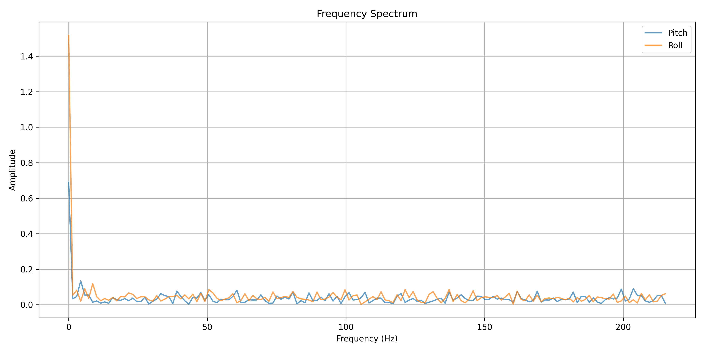
With the data above, I see that 5Hz would be a good cutoff frequency, since we want to limit the high frequencies from affecting the data.
Low-Pass Filter
Next, using 5 Hz as frequency cutoff, I calculate the alpha value for the low-pass filter.
T = np.mean(np.diff(time_loud))
print("T = ", T)
f_c = 5
RC = 1 / (2 * np.pi * f_c)
print("RC =", RC)
alpha = T / (T + RC)
print("α = ", alpha)T = 0.00230769230769249, RC = 0.03183098861837907, α = 0.0675975827153332
Then, I use the following formula to plot filtered data, comparing it with the raw data.
for i in range(1, N):
filtered_pitch[i] = alpha * pitch_data[i] + (1 - alpha) * filtered_pitch[i-1]
filtered_roll[i] = alpha * roll_data[i] + (1 - alpha) * filtered_roll[i-1]As we can see in the graph below, the filter does a great job of smoothening the data out, reducing noise.
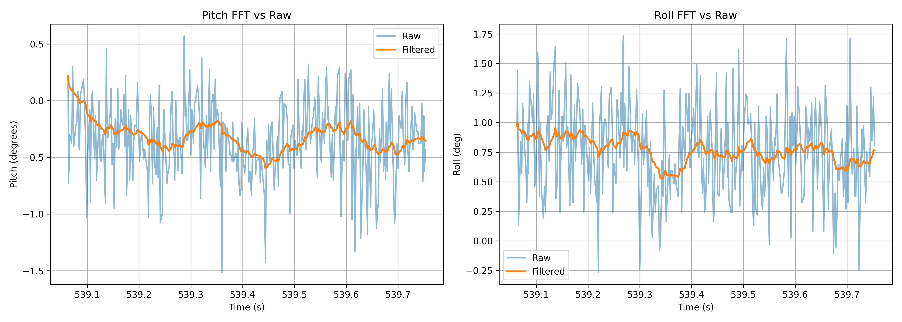
Gyroscope
On the board, the gyroscope has different default axes than the accelerometer. Therefore, the raw roll and pitch will look different if we don't account for the different default axes. In the image shown below, we can see that the gyroscope roll is completely different from the accelerometer roll. The gyroscope roll is actually approximately the same as the accelerometer pitch. Additionally, the negation of gyroscope pitch is approximately the accelerometer roll.
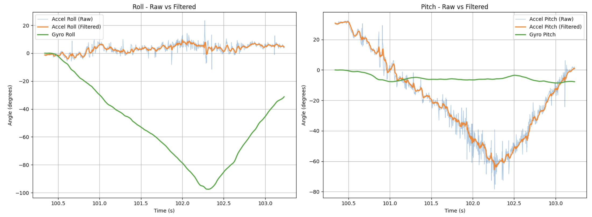
To standardize roll and pitch data from the gyroscope and accelerometer to the same default axes, I simply swap the values:
g_roll += -1 * myICM.gyrY() * dt;
g_pitch += myICM.gyrX() * dt;It was important to note that the gyroscope measures the rate of rotation – during testing, I tried keeping the IMU steady at a certain angle, anticipating that the gyroscope pitch and accelerometer pitch would read the same, but the gyroscope pitch would stay ~0 degrees while the accelerometer pitch read ~45 degrees. To actually see readings from the gyroscope it had to be rotating.
I also can now get yaw measurements with the gyro:
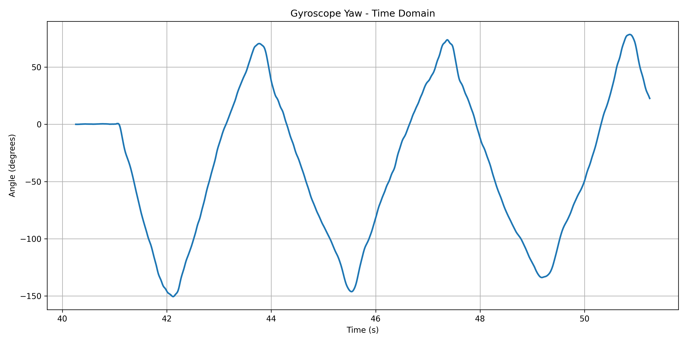
Sampling Frequency
Next, I made some changes to the sampling frequency to observe what would happen to my data. I added a delay of 60 ms to the collection loop.
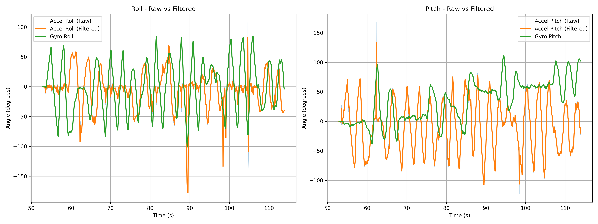
In the graph above, we can see that the time collection took a lot longer, just a little over a minute, compared to previous collections, which took less than 5 seconds. The data is a lot spikier because of the longer time span, but I also noticed that filtered peaks don't reach all the way to +90/-90 degrees, which is how far I was rotating. Introducing the sampling delay can prevent the IMU from capturing data when it is at these positions, therefore not giving us the most accurate results. The raw data peaks however did sometimes reach +90/-90 degrees, indicating that the filter is also playing a part in “ignoring” readings at those angles.
Complementary Filter
When I was implementing the complementary filter, I realized that filter implementations should be on the arduino. I had been post-processing data on python. Therefore, I wrote a new function on the arduino called getIMUData. Rather than having separate commands in my switch-cases, this function collects accelerometer and gyroscope pitch and roll data, as well as filtered data with the low-pass filter and complementary filter.
void
getIMUData() {
//accelerometer variables
float a_pitch;
float a_roll;
// LPF variables
float lpf_pitch = 0.0;
float lpf_roll = 0.0;
float dt;
//gyroscope variables
float g_pitch = 0.0;
float g_roll = 0.0;
float g_yaw = 0.0;
//CF variables
float cf_roll = 0.0;
float cf_pitch = 0.0;
float curr_time;
float last_time = millis();
for (int i = 0; i < DATAPOINTS; i++) {
// wait for data available
while (!myICM.dataReady()) {}
// get data
myICM.getAGMT();
curr_time = millis();
dt = (curr_time - last_time) / 1000.0;
last_time = curr_time;
millis_arr[i] = curr_time;
// raw roll and pitch from accelerometer
a_roll = atan2(myICM.accX(), myICM.accZ()) * 180 / M_PI;
roll_accelerometer[i] = a_roll;
a_pitch = atan2(myICM.accY(), myICM.accZ()) * 180 / M_PI;
pitch_accelerometer[i] = a_pitch;
// lpf for roll and pitch
lpf_roll = alpha * a_roll + (1.0 - alpha) * lpf_roll;
lpf_roll_arr[i] = lpf_roll;
lpf_pitch = alpha * a_pitch + (1.0 - alpha) * lpf_pitch;
lpf_pitch_arr[i] = lpf_pitch;
// raw roll, pitch, and yaw from gyroscope
g_roll += -1 * myICM.gyrY() * dt;
g_pitch += myICM.gyrX() * dt;
g_yaw += myICM.gyrZ() * dt;
roll_gyro[i] = g_roll;
pitch_gyro[i] = g_pitch;
yaw_gyro[i] = g_yaw;
// complementary filter for roll, pitch, and yaw
cf_pitch = alpha * (cf_pitch + g_pitch * dt) * (1.0 - alpha) + lpf_pitch;
cf_roll = alpha * (cf_roll + g_roll * dt) * (1.0 - alpha) + lpf_roll;
cf_pitch_arr[i] = cf_pitch;
cf_roll_arr[i] = cf_roll;
delay(10);
}
for (int j = 0; j < DATAPOINTS; j++) {
tx_estring_value.clear();
tx_estring_value.append(millis_arr[j]);
tx_estring_value.append(",");
tx_estring_value.append(roll_accelerometer[j]);
tx_estring_value.append(",");
tx_estring_value.append(pitch_accelerometer[j]);
tx_estring_value.append(",");
tx_estring_value.append(lpf_roll_arr[j]);
tx_estring_value.append(",");
tx_estring_value.append(lpf_pitch_arr[j]);
tx_estring_value.append(",");
tx_estring_value.append(roll_gyro[j]);
tx_estring_value.append(",");
tx_estring_value.append(pitch_gyro[j]);
tx_estring_value.append(",");
tx_estring_value.append(yaw_gyro[j]);
tx_estring_value.append(",");
tx_estring_value.append(cf_roll_arr[j]);
tx_estring_value.append(",");
tx_estring_value.append(cf_pitch_arr[j]);
tx_characteristic_string.writeValue(tx_estring_value.c_str());
}
}Now, let's take a look at comparisons. There are now four values each for pitch and roll: accelerometer, LPF on accelerometer, gyroscope, and CF on gyroscope. Let's take a look at comparisons below.
Pitch Comparison
Data collected by rotating between -90 and 90 degrees
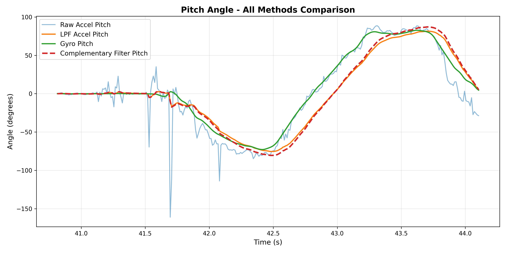
Roll Comparison
Data collected by rotating between -90 and 90 degrees
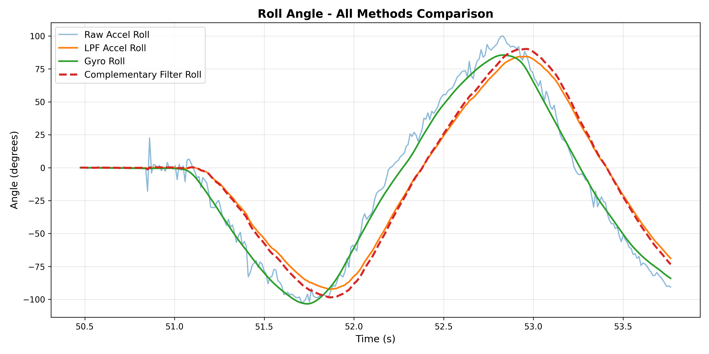
Drift Test
For the drift test, I kept the IMU still for over ~12 seconds, and we can see in the graph below that for both pitch and roll, the complementary filter keeps the angles at ~0 degrees, preventing drift!
Pitch Drift
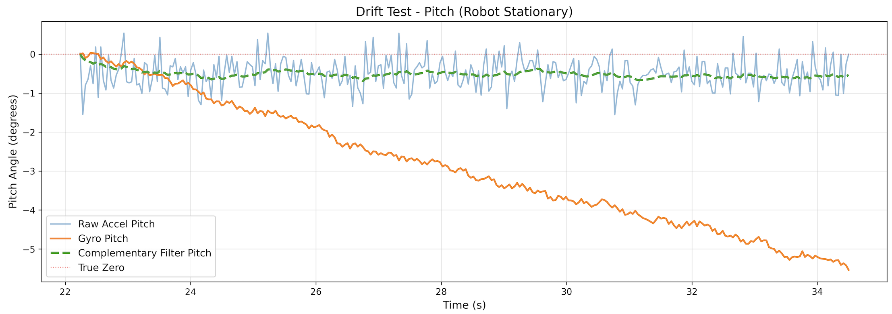
Roll Drift
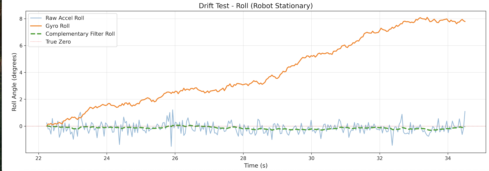
Vibration Test
To see how the complementary filter handles fast vibrations, I collected data while quickly vibrating the IMU, rotating it quickly and shaking it slightly. As we can see in the graphs below, the complementary filter did a good job of staying consistent and not responding to the vibrations.
Pitch Vibration
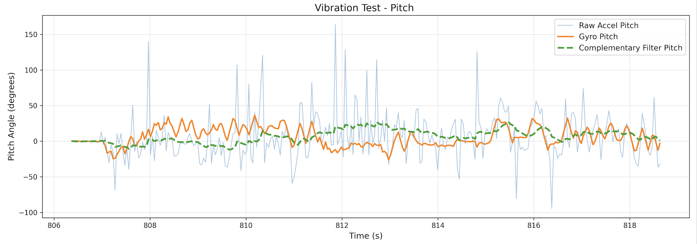
Roll Vibration
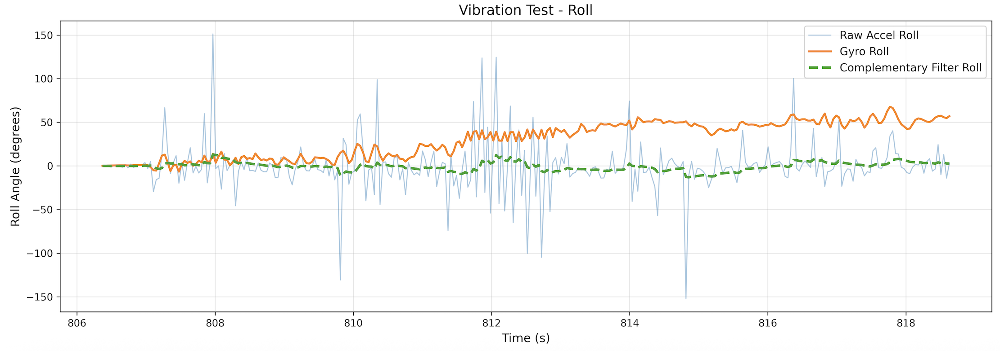
Sample Data
To speed up execution of the main loop, I wrote a new function: GetIMUDataFast(). I had to modify the GetIMUData() function I wrote before. Rather than running the loop in the command, there is a global variable: collect, that starts and stops data collection.
void getIMUDataFast() {
int x = imu_data_count;
if (x >= DATAPOINTS) {
collect = 0;
return;
}
float a_pitch, a_roll;
float curr_time;
myICM.getAGMT();
curr_time = millis();
dt = (curr_time - last_time) / 1000.0;
last_time = curr_time;
millis_arr[x] = curr_time;
a_roll = atan2(myICM.accX(), myICM.accZ()) * 180 / M_PI;
roll_accelerometer[x] = a_roll;
a_pitch = atan2(myICM.accY(), myICM.accZ()) * 180 / M_PI;
pitch_accelerometer[x] = a_pitch;
lpf_roll = alpha * a_roll + (1.0 - alpha) * lpf_roll;
lpf_roll_arr[x] = lpf_roll;
lpf_pitch = alpha * a_pitch + (1.0 - alpha) * lpf_pitch;
lpf_pitch_arr[x] = lpf_pitch;
g_roll += -1 * myICM.gyrY() * dt;
g_pitch += myICM.gyrX() * dt;
g_yaw += myICM.gyrZ() * dt;
roll_gyro[x] = g_roll;
pitch_gyro[x] = g_pitch;
yaw_gyro[x] = g_yaw;
cf_pitch = alpha * (cf_pitch + g_pitch * dt) * (1.0 - alpha) + lpf_pitch;
cf_roll = alpha * (cf_roll + g_roll * dt) * (1.0 - alpha) + lpf_roll;
cf_roll_arr[x] = cf_roll;
cf_pitch_arr[x] = cf_pitch;
}With this code, I was able to sample for more than 5 seconds:
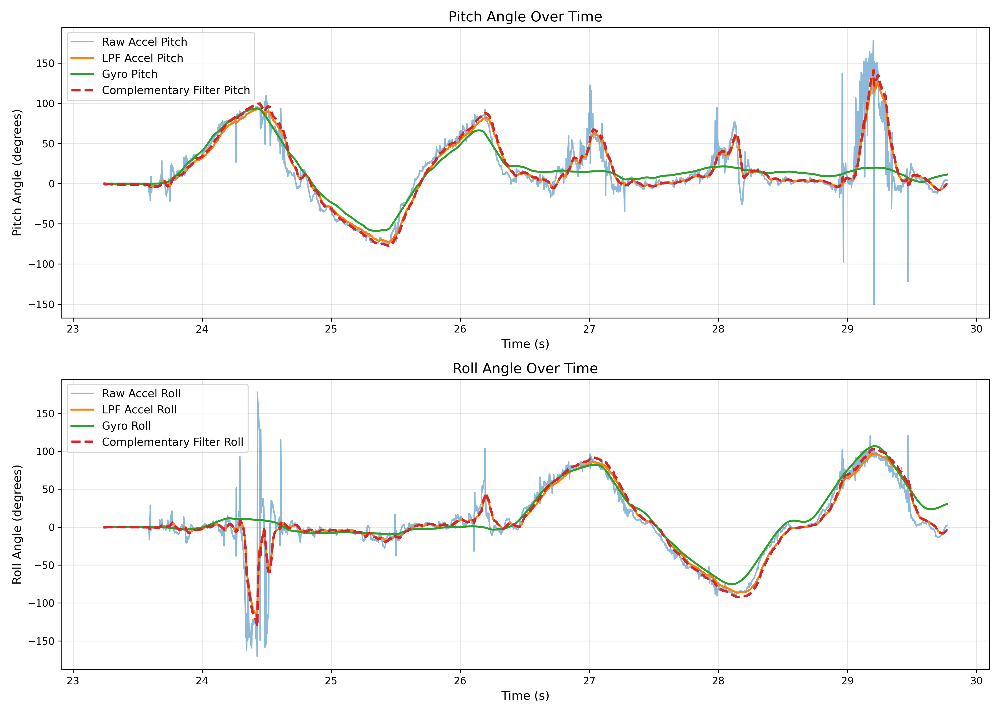
Additionally, I added another global variable that captures the number of times the main loop ran.
void loop()
{
BLEDevice central = BLE.central();
if (central) {
while (central.connected()) {
write_data();
if (collect && myICM.dataReady()) {
getIMUDataFast();
imu_data_count++;
}
total_loops++;
read_data();
}
Serial.println("Disconnected");
}
}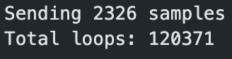
As we can see, the number of main loops that ran is much greater than the number of data points that were collected.
Data Storage
Below is an example of what my csvs looked like, each column is a different sensor measurement.
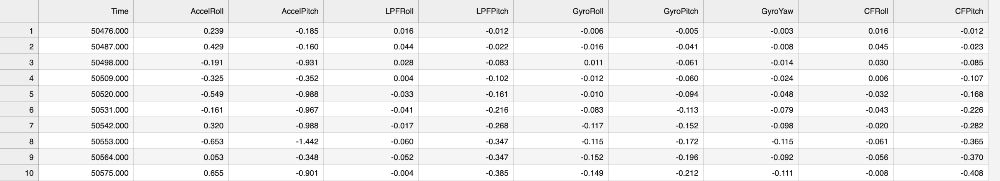
It made sense to store accelerometer and gyroscope data in separate arrays to make data handling easier. In total, there were actually 10 different arrays for storing data. This makes it easier to easily choose which sensor data I want to work with in the code.
float millis_arr[DATAPOINTS];
float roll_accelerometer[DATAPOINTS];
float pitch_accelerometer[DATAPOINTS];
float lpf_roll_arr[DATAPOINTS];
float lpf_pitch_arr[DATAPOINTS];
float roll_gyro[DATAPOINTS];
float pitch_gyro[DATAPOINTS];
float yaw_gyro[DATAPOINTS];
float cf_roll_arr[DATAPOINTS];
float cf_pitch_arr[DATAPOINTS];Each of these arrays stores floats. I decided to use floats over any other datatype because I will be able to store pretty accurate readings. A double is 8 bytes, while a float is only 4, and the level of accuracy is negligible. One datapoint consists of 10 floats, so that gives us 10 * 4 bytes = 40 bytes per datapoint.
There are 246520 bytes of space left, therefore we can store 246520 / 40 = 6163 data points.
3 * 6163 = 18489 / 1000 = 18.489 seconds of data collection!
Stunts!
Ramp Stunt
Soccer
Blooper
Observations
The car can accelerate very quickly and can turn really sharply if its not moving. If it is moving, the turns are a lot longer. If I tried to reverse the direction when the car was moving fast, it would flip over. Also, the battery only lasted about 10 minutes.
Collaboration
During this project I referenced Lucca Correia's page for guidance with filter implementation and data storage strategies. At first, I did my low pass filtering in the python code, but then decided against it. I referenced Lucca's page for ideas for how to implement the filter and store my data effectively. I also was confused about how to speed up the main loop, and was able to understand how to do that better with his page.
Additionally, I used Claude for the python graphing code. The code for making graphs with matplot is tedious and repetitive, but with Claude, I would simply ask for the code for plotting specific data. An example prompt would be: "I want to plot pitch from accelerometer, gyroscope, lpf, and cf data. I already have the csv with the data." I also used Claude for help with the notification_handler function which takes incoming data from the board and puts it into a csv file.
Finally, I vibecoded the entire lab page. I document all my progress in a google doc, saving images and building an outline. At the end, I paste the outline into Claude Code, and get formatted html.